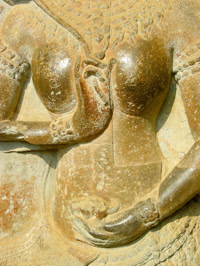

Unsere SeminareWeibliche Räume - ein Ausflug ins Yin
Spielerisch und kreativ entdecken wir Qualitäten unseres weiblichen Seins. Termine:
- von Donnerstag, 18. April abend bis Sonntag, 21. April 2013 in München Weitere Informationen gibt es hier oder im Flyer. |
 |